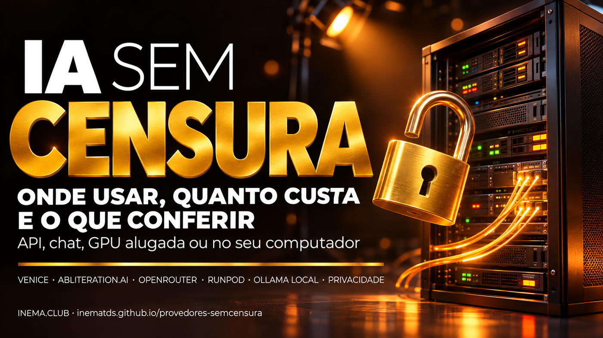

Sete caminhos lado a lado, da API pronta ao modelo rodando no seu computador, com preço, privacidade declarada e o que ninguém confirmou.

Este guia mostra onde encontrar modelos de IA “sem censura”, ou seja, versões que não recusam pedidos. Serve para quem testa a segurança do próprio sistema, pesquisa ou só quer um assistente que não trave em assunto delicado. Você vê numa tabela os provedores por API, por chat, por GPU alugada e no seu próprio computador, com preço, privacidade declarada e se pedem identidade. Para usar, basta ler; os exemplos pedem uma conta no provedor escolhido ou o Ollama instalado.
Um modelo comum aprende a recusar certos pedidos. Quem publica versões “sem censura” remove essa recusa de formas diferentes, e cada forma muda o que você recebe.
O modelo é treinado de novo com exemplos sem recusa. É o caso da família Dolphin. Custa treino, mas o resultado costuma ser mais estável. Esta descrição do Dolphin é conhecimento geral da área; confira no model card de cada versão.
Ninguém treina nada. A técnica acha nos pesos a “direção de recusa” (uma única direção nas ativações do modelo, segundo o paper de Arditi et al., 2024) e a apaga por ortogonalização. É rápida e barata, por isso há centenas de versões assim.
O modelo continua igual. O que muda é o pedido: um prompt montado para enganar as regras. Funciona até o provedor corrigir, quebra sem aviso e costuma violar os termos de uso. Este guia não trata de jailbreak.
O que você perde sem a trava. Modelo sem censura alucina mais e pode perder qualidade: o próprio artigo que popularizou a abliteration mostra queda nos benchmarks do Llama 3 8B depois do corte. Em análise de segurança ele também aponta falso positivo com confiança. E não há trava nenhuma: ele responde coisa perigosa ou errada do mesmo jeito. Confira tudo o que ele disser.
Quase todo modelo aberto sem censura nasce no Hugging Face, o maior repositório público de modelos. Os provedores da tabela abaixo pegam muitos deles de lá.
Em huggingface.co/models, procure abliterated, uncensored, heretic (variante recente) ou dolphin. Ordene por downloads ou curtidas.
O mesmo modelo base aparece em várias edições: autores diferentes (huihui-ai, mlabonne, orcarouter) e tamanhos diferentes (quantização). Para rodar no Ollama, filtre por GGUF.
Antes de baixar, veja no card qual é o modelo base, o método usado, a quantização e se há benchmark. Números como “0% de recusa sem perda” são do autor, não de teste independente.
Preços em US$ por 1 milhão de tokens (entrada / saída), salvo indicação, conferidos em 09/11/2026 nas páginas públicas de cada provedor. Mudam sem aviso: confira no site antes de pagar. “Não confirmado” quer dizer que não achamos a informação, não que ela não exista.
| Provedor | Tipo | Modelos sem censura | Preço aprox. | Pede identidade? | Privacidade / retenção declarada | API compatível com OpenAI? | Observação |
|---|---|---|---|---|---|---|---|
| Venice destaque | API pronta + chat | DeepSeek V4.1 Flash 1017 Uncensored; Venice Uncensored 1.2; Gemma 4 Uncensored; versões E2EE e GLM 4.7 Flash Heretic | Uncensored 1.2: 0,20 / 0,90 Gemma 4 Uncensored: 0,1625 / 0,50 DeepSeek V4.1 Flash Uncensored: 0,33 / 1,32 Plano Pro: US$ 18/mês | Pede conta (e-mail ou carteira). Documento: não confirmado, confira no site | Modo Private: retenção zero por contrato. TEE/E2EE em alguns modelos. Modo Anonymized: o provedor terceiro vê o pedido. Declarado, sem auditoria independente encontrada | Sim | Paga com cartão, cripto ou DIEM. A assinatura não inclui API ilimitada. O V4.1 Flash está marcado para sair |
| abliteration.ai | API pronta | Abliterated Large v2 (GLM-5.3 por baixo, segundo o site) e Large Flash | Planos de US$ 20, 50 e 200/mês (vira crédito). Por token: não confirmado; a Venice revende o Large v2 a 3,00 / 5,00 | Cadastro por Google, GitHub, Microsoft ou e-mail; termos pedem 18+. Documento: não confirmado | “Zero data retention”, prompts fora dos logs. Declarado pelo próprio site | Sim, e também a API Messages da Anthropic | Foco em segurança e red team. Termos proíbem uso ilegal |
| orcarouter (perfil no Ollama) | Local | Qwen3.8-27B-Uncensored; Qwen3.8-Flash-Next-Uncensored (MLX, Apple Silicon) | Grátis (o custo é o seu hardware) | Não, só baixar | Roda na sua máquina | Sim, pelo Ollama em localhost:11434/v1 | Não confunda com o gateway orcarouter.ai, da mesma equipe, que não é sem censura |
| OpenRouter | Roteador | Dolphin Mistral 24B Venice Edition; Hermes 4 405B; Cydonia 24B; Skyfall 36B; Magnum v4 72B; Euryale 70B | Dolphin Venice: 0,20 / 0,90 Hermes 4 405B: 1,00 / 3,00 Magnum v4 72B: 2,50 / 5,00 | Pede conta. Cripto: não confirmado | Depende do provedor por trás de cada modelo; há controles de logging e ZDR na conta | Sim | Hermes, Magnum e Euryale são menos restritivos, não necessariamente 100% sem recusa |
| Featherless | API pronta (assinatura) | Catálogo de 40.000+ modelos do Hugging Face; quais são sem censura: não confirmado | Chat: US$ 25/mês (tokens ilimitados, contexto 32K) Developer: US$ 50/mês em créditos | Conta + pagamento | Política diz que não coleta prompts nem respostas (texto de 10/06/2024) | Não confirmado | O plano Chat proíbe uso por API ou automação; para API, use o Developer |
| RunPod | GPU alugada | Qualquer modelo que você subir (vLLM, Ollama) | Por hora: A100 80GB US$ 1,79; H100 PCIe US$ 2,89; H100 SXM US$ 3,99; RTX Pro 6000 US$ 2,49 | Conta + cartão | Você controla a máquina e os logs | Sim, se rodar vLLM ou Ollama | Cobrança por segundo. Desligue o pod quando parar |
| Local com Ollama | Local | huihui-ai, orcarouter, mlabonne e outros em GGUF | Grátis + hardware | Não | Total: nada sai do seu computador | Sim, em localhost:11434/v1 | Mais privado e mais barato no longo prazo; a qualidade depende da sua GPU |
Também olhamos Novita, Together e DeepInfra: não achamos modelos sem censura nas páginas públicas. O Hugging Face Inference Endpoints aluga GPU por hora para subir qualquer modelo. Vast.ai não foi pesquisado.
Não existe o melhor provedor. Existe o que serve para o que você quer fazer agora.
Crie conta na Venice e use o chat ou a API com o Venice Uncensored 1.2. É o caminho com menos passos.
Vá para: VeniceRode no seu computador com o Ollama e um modelo abliterated. Nada sai da máquina. Precisa de GPU razoável para modelos maiores.
Vá para: Local com OllamaVenice (Gemma 4 Uncensored a 0,1625 / 0,50) ou OpenRouter (Dolphin Venice a 0,20 / 0,90). Ambos aceitam o formato da OpenAI.
Vá para: Venice ou OpenRouterLocal é o único caminho em que você não depende da palavra de ninguém. Se precisar de nuvem, prefira GPU alugada sob seu controle ou os modos E2EE da Venice.
Vá para: Local, RunPod ou Venice E2EEOs exemplos usam endereços conferidos nas documentações públicas em 09/11/2026. Nenhuma chave aparece aqui: você cria a sua no site do provedor e guarda numa variável de ambiente.
A Venice segue a especificação da OpenAI, então qualquer biblioteca da OpenAI funciona trocando o endereço. Crie a chave no painel da Venice e guarde no terminal:
export VENICE_API_KEY="cole-sua-chave-aqui" # nunca no código nem no git curl https://api.venice.ai/api/v1/chat/completions \ -H "Authorization: Bearer $VENICE_API_KEY" \ -H "Content-Type: application/json" \ -d '{"model":"venice-uncensored-1-2","messages":[{"role":"user","content":"Explique o que é abliteration em 3 frases."}]}'
O mesmo em Python, com a biblioteca openai (pip install openai):
import os from openai import OpenAI cliente = OpenAI( base_url="https://api.venice.ai/api/v1", api_key=os.environ["VENICE_API_KEY"], ) r = cliente.chat.completions.create( model="deepseek-v4-1-flash-1017-uncensored", # ou venice-uncensored-1-2, gemma-4-uncensored messages=[{"role": "user", "content": "Liste 3 riscos de um modelo sem censura."}], ) print(r.choices[0].message.content)
Alguns modelos são só para planos pagos e devolvem erro 401 PRO_ONLY_MODEL. Os ids mudam: confira a lista atual em docs.venice.ai. A abliteration.ai funciona do mesmo jeito, com base_url="https://api.abliteration.ai/v1" e a chave dela.
Com o Ollama instalado, um comando baixa e abre o modelo. Nada sai da máquina. O Qwen3.8-27B pede uma GPU boa; se a sua for menor, procure uma versão menor (huihui-ai publica várias em GGUF).
ollama run orcarouter/Qwen3.8-27B-Uncensored # baixa na primeira vez, depois abre o chat # o mesmo modelo pela API local do Ollama curl http://localhost:11434/api/chat -d '{"model":"orcarouter/Qwen3.8-27B-Uncensored","messages":[{"role":"user","content":"oi"}],"stream":false}'
Quer montar isso com acesso pelo celular, sem expor nada na internet, e comparar modelo normal com sem censura? O guia irmão faz o passo a passo completo: IA privada em 3 níveis.
Ferramentas de agente e editores que aceitam um “endpoint compatível com OpenAI” conseguem usar qualquer um desses modelos. A ideia é sempre a mesma, três campos:
https://api.venice.ai/api/v1, https://api.abliteration.ai/v1 ou, local, http://localhost:11434/v1.ollama).venice-uncensored-1-2.Onde fica cada campo muda de ferramenta para ferramenta (Claude Code, Codex, opencode e outras): procure “custom provider”, “base URL” ou “OpenAI compatible” na documentação dela. A abliteration.ai também fala o formato da Anthropic, o que ajuda em ferramentas que só aceitam esse. Lembre: modelo menor e sem trava erra mais em tarefa longa de agente, então revise cada passo que ele executar.
“Sem censura” não quer dizer “sem registro”. Leia isto antes de colar qualquer coisa num provedor.
Bons usos: testar a segurança do seu próprio app, organizar as suas fotos e arquivos sem que um filtro trave, analisar o seu equipamento e a sua rede, pesquisar como os modelos funcionam.
Tirar a trava do modelo não tira a lei. Quem decide o que pedir e o que fazer com a resposta é você, e a responsabilidade também é sua.
Dois guias que completam este.
Monte sua IA local, normal e sem censura, e acesse de qualquer lugar com segurança.
Kit para ligar um modelo abliterated e usá-lo na segurança defensiva dos seus próprios sistemas, sempre com escopo autorizado.